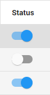

Instructions
- Optionally, filter the list of entity types (left pane).
- Select an entity type.
- A list of entities appears (right pane). This list can be filtered.
- Select one or more entities. Or select all entities with the Select All checkbox.
- Select Enable or Disable.
Only enabled entities will be extracted.
Single entities can be enabled/disabled with the status button.
 - View the list of documents that contain the related entity by clicking the blue # of Documents.
- Optionally, select the three dots in the top right corner to export the list of enabled/disabled entities to CSV or Excel.

Switch to the Library/Manage Jobs/Consumption Overview (top right corner)